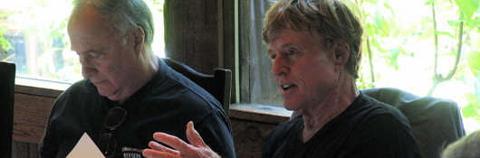

Board of Trustees

Robert Redford, President & Founder
Robert Redford is somewhat of an anomaly in the entertainment industry. Though he has been world-famous for some 30 years, he remains a highly private individual. He is an ardent conservationist and environmentalist, a man who stands for social responsibility and political involvement and an artist and businessman who is a staunch supporter of uncompromised creative expression. His passion remains to make films of substance and social/cultural relevance, as well as to encourage others to express themselves through the arts.
He is recognized the world over for the roles he has played and the projects he has directed or produced throughout a distinguished stage and film career. Believing that it is the unexpected and uncommon, which ultimately enlivens the cultural ecology of a society, Redford has nurtured more than a generation of innovative voices in independent film through his non-profit Sundance Institute and Film Festival. Harvard Business Review observed, “Sundance has become to Hollywood what Silicon Valley has been to the high-tech industry.” His life-long passion for nature and issues of justice has resulted in Redford being widely acknowledged as a highly effective and dedicated political and environmental activist.
Walter L. Weisman, Chairman of the Board
Walter L. (Wally) Weisman is the chairman of the Board of Trustees of Sundance Institute. He began his career as a lawyer and is a graduate of Stanford University and the Stanford University Law School. He entered the health care field in 1969 and in 1972 joined American Medical International Inc., a hospital management company that owned and operated acute care hospitals across the United States and in Europe, the Middle East, Latin America, Asia, and Australia. Weisman became the company’s chairman and later its chief executive officer in 1985.
Weisman is also a past chairman and now a life trustee of the Board of Trustees of the Los Angeles County Museum of Art. He is a senior trustee of the Board of Trustees of the California Institute of Technology and a member of the Institute’s oversight committee for the Jet Propulsion Laboratory. He is a director of Occidental Petroleum Corporation (Los Angeles), and Fresenius Medical Care (Frankfurt, Germany). Mr. Weisman lives in Los Angeles with his wife Sheila. They have three children and five grandchildren.
Pat Mitchell, Vice Chairman of the Board
Pat Mitchell is the president and chief executive officer of the Paley Center for Media which she led through the transition of renaming (formerly the Museum of Television and Radio), with centers in New York and Los Angeles. Mitchell further evolved the 30 year old institution’s mission to be a center for all things media, with public programs and forums for media executives that use the lens to better understand the past, explore the present, and imagine the future.
Prior to her tenure at the museum, she was the chief executive officer at Public Broadcasting Service (PBS). Mitchell rejuvenated the National Program Service and oversaw the development of many new projects including a new primetime documentary series, the launch of a new channel for children, the first public media and commercial partnership, and the digital conversion of the 352 public television stations. She also established the PBS Foundation to provide an endowment to support and sustain public service media.
From 1990-2000, Mitchell was an executive in charge of original productions for Ted Turner’s cable networks, overseeing as executive producer more than 400 hours of documentaries and specials a year. During her tenure as president of Turner Original Productions and CNN Productions, the programs produced under her direction were awarded 37 Emmy Awards, 5 Peabody Awards, and 2 Academy Award nominations.
In the mid-'80s, Mitchell founded and ran an independent production company specializing in programs produced for and about women. She was the first American woman to host, produce, and own a national television series, Woman to Woman, which was nationally syndicated and won the Emmy for Best Talk program in 1984.
As well as serving as the vice chair of the Sundance Institute Board, Mitchell is a member of the Council on Foreign Relations and the U.S. Afghan Women’s Council; a founding president of Mikhail Gorbachev’s global environmental organization, Global Green USA; an adviser to the Center for Public Leadership at the Kennedy School of Harvard University; a member of the Mayo Clinic’s Board of Trustees; and on the corporate board of AOL.
She is married to Atlanta businessman Scott Seydel, and together they have six children and eight grandchildren.
Sean Bailey
Sean Bailey is President of Walt Disney Studios Motion Picture Production and oversees all aspects of live-action development, film production and physical production for Walt Disney Pictures. Upcoming titles include Tim Burton's Frankenweenie; Oz The Great and Powerful, directed by Sam Raimi and starring James Franco, Rachel Weisz, Mila Kunis and Michelle Williams; and The Lone Ranger, starring Johnny Depp, directed by Gore Verbinski and produced by Jerry Bruckheimer. Prior to joining The Walt Disney Studios in 2010, Bailey produced Disney's TRON: Legacy, directed by Joseph Kosinski, starring Jeff Bridges, Garrett Hedlund and Olivia Wilde, developing it in tandem with other media ranging from the Grammy-nominated, RIAA Gold-certified soundtrack by Daft Punk to a multi-platform video game and an upcoming Disney XD television series.
In 2008, he founded Idealogy, Inc., with a focus on the evolution and future of creative content, developing high-quality stories that can live across media. Bailey worked as a writer-producer under an exclusive deal with ABC Studios from 2004 to 2008, during which time he continued in his capacity as chairman and board member of LivePlanet, the production company he co-founded in 2000 with Ben Affleck, Matt Damon and Chris Moore. While at LivePlanet, he executive-produced the innovative LivePlanet/HBO/Miramax series Project Greenlight, nominated for three Emmy Awards, and co-created the LivePlanet/ABC series Push, Nevada with Affleck.
A 20-year industry veteran, Bailey has created, packaged and developed film, television and new media concepts for Walt Disney Pictures, Miramax, 20th Century Fox, Columbia Pictures, DreamWorks, New Line Cinema, Paramount, Sony Pictures, Universal Pictures, Warner Bros., all major television networks, MSN and Yahoo. His feature film producing credits include Miramax's Gone, Baby, Gone, directed by Ben Affleck and starring Casey Affleck, Ed Harris, Morgan Freeman and Amy Ryan; Matchstick Men, directed by Ridley Scott and starring Nicolas Cage; The Core; and Best Laid Plans. His screenplay Solace, co-written by Ted Griffin, is in preproduction at New Line Cinema. Bailey's first job as a producer in the entertainment industry was developing the game show Debt for Buena Vista Television, which aired on Lifetime from 1996-1998.
Kenneth Cole
As a renowned American designer and humanitarian, Kenneth Cole believes that “it is great to be known for your shoes but even better to be recognized for your soul”.
A business that began 20+ years ago out of the back of a 40 foot trailer, Kenneth Cole Productions has risen to the top of American fashion. With worldwide distribution of his lifestyle brand, Kenneth Cole has been able to unite his fashion instincts and business acumen with his philanthropic convictions. As chairman to the Foundation for AIDS Research (amfAR) and a founding board member to the homeless organization HELP USA, Kenneth Cole has made it his business to fuse fashion with social action. Kenneth is also a board member of the Council of Fashion Designers of America (CFDA).
He resides in Westchester, New York, with his wife Maria Cuomo Cole and their three daughters.
Ava DuVernay (Artist Trustee)
Ava is a filmmaker, marketer and film distributor. At the 2012 Sundance Film Festival, she became the first African-American woman to win the Best Director prize for her second feature film, Middle of Nowhere (US Dramatic Competition).
Previously, she formed the DuVernay Agency, now known as DVA Media + Marketing in 1999. The award-winning marketing and publicity firm has provided strategy and execution for more than 100 film and TV projects by directors such as Steven Spielberg, Clint Eastwood, Michael Mann, Robert Rodriguez and Kevin Smith.
Ava participated as a mentee in the inaugural year of Sundance’s Women Filmmakers Initiative mentorship program, and was a mentor at FFP’s 2013 Screenwriters Intensive. Ava is based in Los Angeles.
Rob Epstein (Artist Trustee)
Rob is a film director, producer, writer and editor. He has won two Academy Awards for Best Documentary Feature for the films The Times of Harvey Milk, which premiered at the 1985 Sundance Film Festival, and Common Threads: Stories from the Quilt. He recently transitioned from non-fiction documentaries into scripted narratives, producing the biopics HOWL (2010) and Lovelace (2013), both of which premiered at Sundance Film Festival.
Rob was a FFP Lab fellow with the film Howl and participated as an Advisor at the 2012 Composers + Documentary Lab. He has received numerous awards including a Guggenheim Fellowship and the Outfest Achievement Award. He is a member of the Directors Guild of America and the Academy of Motion Picture Arts and Sciences where he currently serves on the Board of Governors. He is based in San Francisco, where he is a professor of film at California College of the Arts.
Jack Ferraro
Jack M. Ferraro retired in January 2000 from Neuberger & Berman, L.L.C., where he spent 21 years as a money manager of individual and institutional accounts and became a general partner in 1983. Prior to joining Neuberger, Mr. Ferraro was a portfolio manager at the Banca Del Gottardo in Lugano, Switzerland, and a securities analyst with Oppenheimer and Co. in New York and London.
Ferraro sits on Cornell University's Johnson Graduate School of Management's Advisory Council and was president of the Johnson School Alumni Association for several years. He also serves on the Boards of the Johnson School's Parker Center and of the Cayuga MBA Fund. He served on the Board of Trustees of the Hackley School from 1985-2009 and as its president from 1990-2000. He received the Hackley School Medal of Honor, the school’s highest award, in 2000 and was made an honorary alumnus of the School in 2003. He was named to the school's Honorary Board of Trustees in 2009. Mr. Ferraro and his wife Marianne endowed the Ferraro Family Chair in the Arts at the Hackley School. While residing in the New York area, Jack also served on the Blair Academy Board of Trustees from 1994-2000 and as a Trustee of the Neuberger Museum of Art from 1996-2000.
Mr. and Mrs. Ferraro became full time residents of Utah in 2000, dividing their time between Park City and St. George. In addition to his involvement with Sundance Institute, Mr. Ferraro served on the Board of Park City’s National Ability Center ("NAC") from 2002-2008 and as its president in 2004. He was also a member of the Utah Symphony and Opera’s Deer Valley Music Festival's Advisory Council from 2003-2008.
From 2004-2010, Mr. Ferraro served on the Board of Directors of the BMP Sunstone Corporation, a Chinese pharmaceutical company listed on the NASDAQ, where he was a member of the executive, audit, and finance committees.
Jeanne Donovan Fisher
Jeanne Donovan Fisher is a producer, investor, and philanthropist living in New York City. Fisher is president of True Love Productions, a theater and film production company in New York that she formed in 2001. Prior to the producing venture, Fisher’s professional background was in strategic communications. From 1992 until 1998, she was a managing director and founding partner of Citigate SVC, a public relations consulting firm in New York. Before joining SVC, she was vice president and director of corporate communications at Morgan Stanley. She served as the company’s primary spokesperson, oversaw its communications on a worldwide basis, and was responsible for Morgan Stanley's public relations, media relations, advertising, and editorial services functions.
Fisher is an active philanthropist who serves on the boards of Sundance Institute, Brooklyn Academy of Music (BAM), Environmental Defense Fund, the Fisher Center for the Performing Arts at Bard (chair), and the American Fund for the Tate Modern. She also supports numerous other nonprofit institutions, particularly in the areas of arts and education.
Fisher was born in Boston and grew up in Hudson, Ohio. Her interests include theater, film, 20th century art and design, fiction, golf, and champagne. She is the wife of the late Richard B. Fisher, former chairman and chief executive of Morgan Stanley.
Robert J. Frankenberg
Bob Frankenberg is the owner of NetVentures, a management consulting firm focused on the high tech industry. Prior to its sale in 2004, Frankenberg chaired Kinzan, a leading provider of Internet services platforms. From April 1994 to August 1996, Frankenberg was the chairman/CEO of Novell, the world’s largest networking software company. Prior to Novell, Frankenberg was the corporate vice president and group general manager of Hewlett-Packard’s Personal Information Products Group, responsible for HP’s personal computer, server, networking, office software, calculator, and consumer product lines.
Frankenberg serves as a member of the board of directors of public companies National Semiconductor and Nuance Communications, as well as startup companies Veracity Networks, Digital Bridge, and Sylvan Source. He has served on the Utah Advisory board of the Sundance Institute since 1994 before becoming a Sundance Institute Trustee. He is chairman of the Westminster College Board of Trustees. He is a former member of the San Jose State University Advisory, Stanford Business School Alumni, America Online (AOL), Daw Technologies, Electroglas, Encanto Networks, Extended Systems, Kinzan, PowerQuest, Starlight Networks, Wall Data, and Placer Rehabilitation Industries boards.
Frankenberg is a 1974 Phi Kappa Phi/Tau Beta Pi, summa cum laude computer engineering graduate of San Jose State University. He is a SEP graduate of Stanford’s Graduate School of Business. He was recently inducted into the Silicon Valley Engineering Hall of Fame. He served in the U.S. Air Force from 1965 to 1969. He and Linda, his wife of 40 years, live in Alpine, Utah.
Cindy Harrell Horn
Cindy Harrell Horn is an advocate for education, public health, and the environment. She has worked with the UCLA School of Public Health in California and the Los Alamos National Laboratory (LANL) in New Mexico in their new effort to combat emerging infectious diseases. She has also helped secure bipartisan funding and support for the UCLA/LANL High Speed, High Volume Laboratory Network.
Horn is a cofounder and member of the Board of the Environmental Media Association (EMA), a nonprofit organization created to inspire and coordinate an entertainment industry response to global environmental crises. Horn was a founding trustee of Heal the Bay and The Archer School for Girls. She has also served as a board member for The Coalition for Clean Air, Tree People, The Natural Step, the Center for Environmental Education, the UCLA School of Public Health, and is a member of the Painting Conservatory Council for the J. Paul Getty Museum. In 1991 she was appointed by the U.S. Environmental Protection Agency Administrator, William Reilly, to serve on the National Education Advisory Council and was awarded the State of California Legislative Woman of the Year. Horn has been honored by American Oceans Campaign, Heal the Bay, The Archer School for Girls, EMA, and the UCLA School of Public Health. Horn and her husband Alan reside in Los Angeles.
Sheila C. Johnson
Ms. Johnson is CEO of Salamander Hospitality, where she oversees a portfolio of properties including Innisbrook Resort in Innisbrook, FL, Woodlands Inn in Summerville, SC, and Salamander Resort & Spa, currently being constructed in Middleburg, VA. As Vice Chairman of Monumental Sports & Entertainment and President and Managing Partner of the WNBA’s Washington Mystics, she is the first African-American woman to have a stake in three professional sports teams, including the Washington Wizards (NBA) and the Washington Capitals (NHL).
Johnson is a partner in both ProJet Aviation, specializing in aviation consulting and charter services and Mistral, the makers of fine bath, body and home products. Johnson is a founding partner of Black Entertainment Television (BET). As a film producer, her projects include Kicking It, A Powerful Noise and Ella Es el Matador. Her latest film, The Other City, is about the HIV/AIDS crisis in Washington DC.
In 2006, Johnson was named global ambassador for CARE. She is a member of the Council on Foreign Relations, serves as Chair of the Board of Governors of Parsons The New School for Design, and on the boards for the University of Virginia Board of Visitors, the President’s Committee on the Arts and the Humanities, Americans for the Arts, the Jackie Robinson Foundation, the Tiger Woods Foundation, Howard University and the University of Illinois Foundation.
An accomplished violinist, Ms. Johnson earned a Bachelor of Arts in music from the University of Illinois.
Christine Lahti
Christine Lahti is an actor and director whose work has appeared in TV, film, regional theatre, Broadway, and Off- Broadway. She earned her first Oscar nomination (and The NY Film Critics Award) for Swing Shift (1985) and won an Oscar 10 years later as a first-time director for her short film Lieberman in Love. In 1998 after multiple nominations, Lahti won both the Emmy and her second Golden Globe Award – the TV movie No Place Like Home was the first – for her portrayal of Dr. Kathryn Austin on Chicago Hope. Three years later her feature film directorial debut, My First Mister, opened the 2001 Sundance Film Festival.
More recent television work includes roles on Law & Order: SVU, A&E’s The Cleaner, Studio 60, and Jack and Bobby, and her recent film work includes the upcoming Flying Lessons, Yonkers Joe, and Obsessed. Other film credits include Running On Empty (LA Film Critics Award), Housekeeping, and Just Between Friends. In 2009-2010, she starred on Broadway in God of Carnage. Other NY Stage credits include The Heidi Chronicles, Little Murders, (Obie Award), The Woods (Theatre World Award) and 3 Hotels (Drama Desk Nomination.) Regional theatre credits include Moon for the Misbegotten, Summer and Smoke, and Cat on a Hot Tin Roof. She also starred in Wendy Wasserstein’s final play, Third, at the Geffen Playhouse.
Lyn Davis Lear
Lyn Davis Lear is a cofounder and member of the Board of the Environmental Media Association (EMA), a nonprofit organization created to inspire and coordinate an entertainment industry response to the global environmental crisis. Formed in 1989, EMA educates and motivates members of the creative community to incorporate environmental themes and issues in television programming and films. In 2004, she received the Lifetime Achievement Award from The Children's Health Environmental Coalition (CHEC).
In 2005, Lyn received the EMA Board of Directors Ongoing Commitment Award presented by the honorable Al Gore in recognition of her dedication to the environment. In 2008, Mrs. Lear received the Global Green 2008 Millennium Award for Entertainment Industry Environmental Leadership and is currently a member of the Board of Trustees for Sundance Institute.
Mrs. Lear holds a Ph.D. in clinical psychology and is married to television writer and producer Norman Lear. She resides in Los Angeles, California, and is the mother of three children.
Thomas E. Rothman
Tom Rothman is one of the most experienced executives in the modern media business. He was recently named Chairman of a new joint venture with Sony Pictures to make movies and television under the TriStar banner. He began as a pioneer in American independent film in the 1980s, and founded Fox Searchlight in 1994. During a subsequent 18-year run at 20th Century Fox, including 12 years as Chairman and CEO, the company consistently produced the highest profit margins of any major studio. Operating profits for 2012, his last year at Fox, were tops in the sector. Milestones during his tenure include the two biggest films in cinematic history, over $40 billion in worldwide box office, more than 150 Academy Award nominations, three Best Picture Oscars, and multiple Emmys.
Geoffrey K. Sands
Geoffrey Sands is a Director of McKinsey & Company and heads its Global Media, Entertainment and Information Practice in North America. He also co-leads McKinsey's Digital Marketing Practice. He has over 25 years of experience working with many of the leading marketing, media and entertainment companies. His clients span a wide range of businesses that include: newspaper, magazine and book publishing; broadcast and cable television; internet service providers; recorded music; filmed entertainment; professional publishing; business information services; education; marketing services; video games; consumer electronics; and sports.
Geoff serves on the Board of Directors of the Sundance Institute, Thirteen/WNET and the Paley Center for Media. He is also Chairman of the Board of The Public Broadcasting Service (PBS). Since 2004, he has been the Industry Advisor to the World Economic Forum's Media & Entertainment Governors' Meetings, and also serves as a member of the Forum's Council on the Future of Journalism.
Geoff received his BA and MBA from Yale University. He resides in Rye, NY with his wife and four children.
Nadine Schiff
Nadine began her career as a television journalist, becoming a national reporter for the Dan Rather CBS Evening News. Prior to that, she hosted her own Toronto talk show, Take 30, and reported for The Journal, the flgship news-magazine show for the Canadian Broadcasting Corporation. In the early nineties, Ms. Schiff was hired as VP of Michael Douglas' Sony-based Stonebridge Entertainment and produced films such as Made in America, Flatliners, The Wedding Dress and Live From Baghdad. For seven years, Ms. Schiff served on the Board of the Women's Conference headed by Maria Shriver and currently serves on the Board of The HELP Group. Nadine Schiff has a Master's Degree in Clinical Psychology and an MFA in Creative Writing from Antioch University. She is married to Fred Rosen, former Chairman of Ticketmaster Inc. and has one son.
Jim Swartz
Jim Swartz is a Partner and Founder of Accel Partners, a prominent global technology venture capital firm with offices in Palo Alto, CA, London, England, Bangalore, India and Beijing and Shanghai, China. Entering a fifth decade in venture capital and as a Director for over fifty successful companies, he has been closely involved as lead investor with the emergence of numerous industry pioneering technology companies. A long time industry leader, Jim is former Chairman of the National Venture Capital Association and a 2007 recipient of its Lifetime Achievement Award. He is a graduate of Harvard University with a concentration in Engineering Sciences and Applied Physics (he mostly remembers something about playing football) and holds a M.S. in Industrial Administration from Carnegie Mellon University, where he sponsors the Swartz Entrepreneurial Fellowship Program and the James R. Swartz Leadership Scholarship.
He is Chairman of the Swartz Foundation and the Christian Center of Park City, Director Emeritus of the U.S. Ski and Snowboard Foundation (where he established the Borgen-Swartz Education Endowment), Trustee of the Sundance Institute and the San Francisco Museum of Modern Art, and a member of the Board of Advisors of Tepper School of Business. Jim led the establishment of the Deer Valley Music Festival as a Founder and the YMCA of Martha's Vineyard as Chairman of the Capital Campaign. From 1999 to 2002, he served on the Management Committee of the Salt Lake Organizing Committee for the Winter Olympics of 2002. He is the recipient of a Merit Award from Carnegie Mellon University, the inaugural Lifetime Achievement Award from its Tepper School of Business, and an Honorary Doctorate Degree from the Western Governors University.
Jim is also an accomplished Grand Prix sailboat skipper. With the yacht Moneypenny, he won the 2006 Swan World Cup, the 2006 US IRC National Championship and the 2005 and 2007 Swan North American Championships. With the TP52 yacht Vesper he won the 2011, 2012, and 2013 Rolex Big Boat Series, the 2011 Queen’s Cup and Astor Cup of the New York Yacht Club, and the 2011 IRC East Coast, 2012 US IRC National, and 2013 West Coast Championships. In 2013, Vesper set all-time course records for the Round the Island races of the New York Yacht Club and the Edgartown Yacht Club.
Together with his wife Susan, Jim founded Impact Partners, a financing and advisory firm advancing independent cinema that addresses pressing social needs including Academy Award Winners Born Into Brothels (2005) and The Cove (2010) and numerous Academy Award Nominees and Sundance Award Winners.
Liesl Tommy (Artist Trustee)
Liesl Tommy is an award-winning international director. Her world premieres includeParty Peopleby Universes (Oregon Shakespeare Festival), The White Man – A Complex Declaration of Loveby Joan Rang (DanskDansk Theatre, Denmark), Peggy Picket Sees the Face of Godby Roland Schimmelpfennig (Luminato Festival/Canadian Stage Toronto), Eclipsedby Danai Gurira (Yale Repertory Theatre, Woolly Mammoth Theatre Company), The Good Negroby Tracey Scott Wilson (The Public Theater, Dallas Theater Center), A History of Lightby Eisa Davis (Contemporary American Theatre Festival), Angela’s Mixtapeby Eisa Davis (Synchronicity Performance Group, New Georges),Bus and Family Ties(Play Company for the Romania Kiss Me! Festival). Her other credits include California Shakespeare Theater, Huntington Theatre Company, Baltimore Centerstage, Sundance East Africa, Manda Island, Kenya, Berkeley Repertory Theatre, Oregon Shakespeare Festival, La Jolla Playhouse, and Huntington Theatre Company, among others. Liesl is Associate Director at Berkeley Rep, serves as a Program Associate at Sundance Institute Theatre Program focusing on its activities in East Africa and was recently made an Artist Trustee with the Sundance Institute’s Board of Trustees. She was awarded the inaugural Susan Stroman Directing Award from the Vineyard Theatre, the NEA/TCG Directors Grant, and the New York Theatre Workshop Casting/Directing Fellowship. She is a native of Cape Town, South Africa.
John E. Warnock
John E. Warnock is cochairman of the Board of Directors of Adobe Systems, Inc., a company he cofounded in 1982 with Charles Geschke. Dr. Warnock was President of Adobe for his first two years and chairman and CEO for his remaining 16 years at Adobe. Warnock has pioneered the development of graphics, publishing, Web, and electronic document technologies that have revolutionized the field of publishing and visual communication.
Warnock’s entrepreneurial success has been chronicled by leading business and computer industry publications, and he has received numerous awards for technical and managerial achievement. A partial list of awards includes: University of Utah Distinguished Alumnus Award (1995); Software Systems Award (1989, Association for Computing Machinery); Edwin H. Land Medal (2000, Optical Society of America); Bodley Medal (2003, Bodleian Library at Oxford University); Lovelace Medal (2004, British Computer Society); Medal of Achievement (2006, AeA); Computer Entrepreneur Award (2008, IEEE Computer Society); United States National Medal of Technology and Innovation (2009).Warnock is a member of the National Academy of Engineering, the American Academy of Arts and Sciences, and the American Philosophical Society. He has received honorary degrees from the University of Utah, the American Film Institute, and Nottingham University.
Warnock is a member of the board of directors of Adobe Systems Inc., Ebrary Inc., Mongonet Inc., and Salon Media Group. He is past chairman of the Tech Museum of Innovation in San Jose. He also serves on the Board of Trustees of the American Film Institute and Sundance Institute.
Before cofounding Adobe Systems, Warnock was principal scientist at Xerox Palo Alto Research Center (PARC). Prior to joining Xerox, Warnock held positions at Evans & Sutherland Computer Corporation, Computer Sciences Corporation, IBM, and the University of Utah.
Dr. Warnock holds eight patents, B.S. and M.S. degrees in Mathematics, and a Ph.D. in Electrical Engineering, all from the University of Utah.
Jacki Zehner
Jacki Zehner dedicates her time and resources towards the advancement of women and girls. As the President of The Jacquelyn and Gregory Zehner Foundation, a role she has held for the past decade, Jacki funds a variety of projects and organizations with a particular focus on women's rights, women's foundations, movement building and media. More recently, Jacki became the CEO of Women Moving Millions (WMM), a non-profit organization dedicated to mobilizing unprecedented resources for women and girls. With more than 180 women each contributing a million dollars or more to organizations of their choice, WMM has successfully centered the needs of women and girls in philanthropic giving. She also has written over 600 blog entries on her personal blog jackizehner.com and is a featured writer on many platforms including The Huffington Post, The Daily Beast, LinkedIn and Bloomberg. Jacki regularly gives keynote addresses, including a TEDxWomen Talk on “Closing The Gender Gap.”
In 1996, Jacki became the youngest woman and first female trader to be invited into the partnership of Goldman Sachs. She left that role in 2002 and has since had primarily a philanthropic focus. She currently serves on the Board of The Sundance Institute as well as the advisory boards of The Geena Davis Institute for Gender in Media, The Pax Global Women’s Equality Fund, the Women Effect Investing Initiative of Criterion Ventures, The Shriver Report, The Women@Paley Initiative, The 2020 Women on Boards Board of Leaders, The Women’s Philanthropy Institute Council and Gamechanger, a feature film fund for female directors. She is a prior board member of many other organizations.
Jacki is a member of many philanthropic communities and networks including the International Women’s Forum, The Harvard Kennedy School's Women's Leadership Board, The Women Donor’s Network, The Red Cross Tiffany Circle, and the United Way of Salt Lake’s Women’s Leadership Council. In honor of her work she has received many awards including most recently the Global Fund For Women's Philanthropy Award.
Jacki was born and raised in Kelowna, British Columbia, Canada. After living in New York City and Connecticut for 25 years, Jacki now lives in Park City, Utah, with her husband Greg and two children.
Emeritus:
Glenn Close
Sally Field
Steven Haft
George White
")